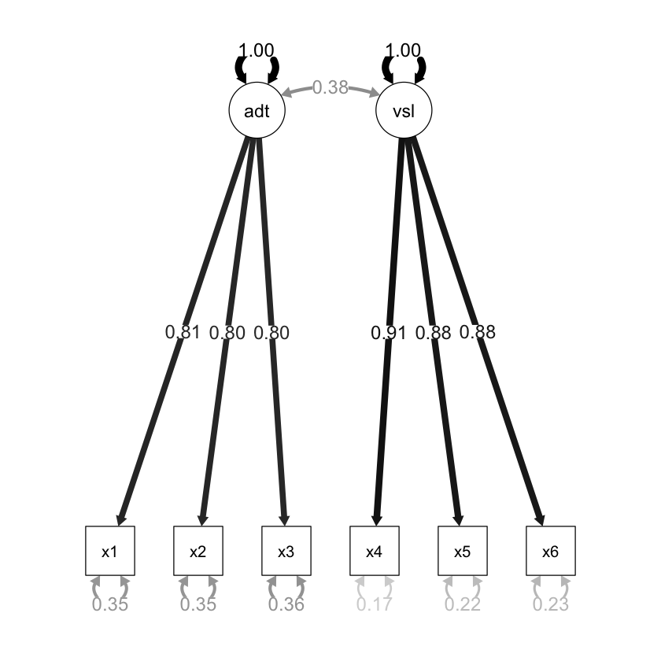
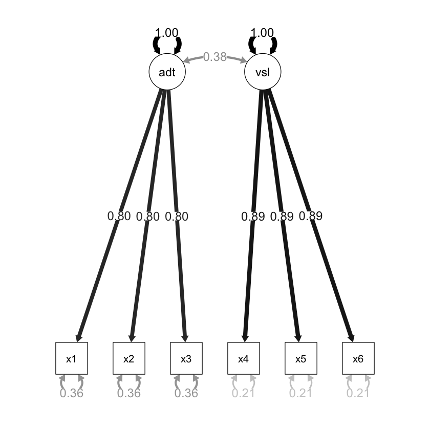

here::here("code", "_common.R") |>
source()
# Load packages
if (!requireNamespace("pacman")) install.packages("pacman")
pacman::p_load(lavaan, semPlot)48 CFA: confronto tra modelli
Prerequisiti
Concetti e Competenze Chiave
Preparazione del Notebook
48.1 Introduzione
In un modello CFA, i parametri possono essere stimati senza vincoli, possono essere fissi o possono essre stimati sulla base di alcuni vincoli. Un parametro libero è sconosciuto e il ricercatore consente all’algoritmo di stima di trovare il suo valore ottimale che, insime agli altri parametri del modello, riduce al minimo le differenze tra le matrici di varianze-covarianze osservate e quelle predette dal modello. Un parametro fisso è pre-specificato dal ricercatore ad un valore specifico, più comunemente 1.0 (ad esempio, per definire la metrica di una variabile latente) o 0 (ad esempio, l’assenza di saturazionoi fattoriali o di covarianze di errore). Come per un parametro libero, anche un parametro vincolato è sconosciuto; tuttavia, un tale parametro non può assumere un valore qualsiasi, ma deve rispettare le restrizioni su suoi valori che il ricercatore ha imposto. I vincoli più comuni sono i vincoli di uguaglianza, in cui i parametri non standardizzati devono assumere valori uguali (ad esempio, in diversi gruppi).
Consideriamo un esempio discusso da Brown (2015). Viene qui esaminato un set di dati in cui le prime tre misure osservate (X1, X2, X3) sono indicatori di un costrutto latente corrispondente alla Memoria uditiva e il secondo insieme di misure (X4, X5, X6) sono indicatori di un altro costrutto latente, Memoria visiva. Le tre misure usate quali indicatori del costrutto di memoria uditiva sono: X1 = memoria logica, X2 = associazione verbale a coppie, X3 = liste di parole; le tre misure usate come indicatori del costrutto di memoria visiva sono: X4 = immagini di facce, X5 = foto di famiglia, X6 = generiche riproduzioni visive. I dati sono i seguenti:
sds <- '2.610 2.660 2.590 1.940 2.030 2.050'
cors <-'
1.000
0.661 1.000
0.630 0.643 1.000
0.270 0.300 0.268 1.000
0.297 0.265 0.225 0.805 1.000
0.290 0.287 0.248 0.796 0.779 1.000'
covs <- getCov(cors, sds = sds, names = paste("x", 1:6, sep = ""))
print(covs) x1 x2 x3 x4 x5 x6
x1 6.812100 4.589059 4.258737 1.367118 1.573595 1.551645
x2 4.589059 7.075600 4.429884 1.548120 1.430947 1.565011
x3 4.258737 4.429884 6.708100 1.346593 1.182982 1.316756
x4 1.367118 1.548120 1.346593 3.763600 3.170251 3.165692
x5 1.573595 1.430947 1.182982 3.170251 4.120900 3.241808
x6 1.551645 1.565011 1.316756 3.165692 3.241808 4.202500Adattiamo i cinque modelli discussi da Brown (2015).
48.2 Modello congenerico
model.congeneric <- '
auditorymemory =~ x1 + x2 + x3
visualmemory =~ x4 + x5 + x6
'fit.congeneric <- cfa(
model.congeneric,
sample.cov = covs,
sample.nobs = 200,
std.lv = TRUE
)L’output si ottiene con:
out = summary(
fit.congeneric,
fit.measures = TRUE,
standardized = TRUE,
rsquare = TRUE
)
print(out)lavaan 0.6-18 ended normally after 21 iterations
Estimator ML
Optimization method NLMINB
Number of model parameters 13
Number of observations 200
Model Test User Model:
Test statistic 4.877
Degrees of freedom 8
P-value (Chi-square) 0.771
Model Test Baseline Model:
Test statistic 719.515
Degrees of freedom 15
P-value 0.000
User Model versus Baseline Model:
Comparative Fit Index (CFI) 1.000
Tucker-Lewis Index (TLI) 1.008
Loglikelihood and Information Criteria:
Loglikelihood user model (H0) -2337.980
Loglikelihood unrestricted model (H1) -2335.541
Akaike (AIC) 4701.959
Bayesian (BIC) 4744.837
Sample-size adjusted Bayesian (SABIC) 4703.652
Root Mean Square Error of Approximation:
RMSEA 0.000
90 Percent confidence interval - lower 0.000
90 Percent confidence interval - upper 0.057
P-value H_0: RMSEA <= 0.050 0.929
P-value H_0: RMSEA >= 0.080 0.010
Standardized Root Mean Square Residual:
SRMR 0.012
Parameter Estimates:
Standard errors Standard
Information Expected
Information saturated (h1) model Structured
Latent Variables:
Estimate Std.Err z-value P(>|z|) Std.lv Std.all
auditorymemory =~
x1 2.101 0.166 12.663 0.000 2.101 0.807
x2 2.182 0.168 12.976 0.000 2.182 0.823
x3 2.013 0.166 12.124 0.000 2.013 0.779
visualmemory =~
x4 1.756 0.108 16.183 0.000 1.756 0.907
x5 1.795 0.115 15.608 0.000 1.795 0.887
x6 1.796 0.117 15.378 0.000 1.796 0.878
Covariances:
Estimate Std.Err z-value P(>|z|) Std.lv Std.all
auditorymemory ~~
visualmemory 0.382 0.070 5.463 0.000 0.382 0.382
Variances:
Estimate Std.Err z-value P(>|z|) Std.lv Std.all
.x1 2.366 0.372 6.365 0.000 2.366 0.349
.x2 2.277 0.383 5.940 0.000 2.277 0.323
.x3 2.621 0.373 7.027 0.000 2.621 0.393
.x4 0.662 0.117 5.668 0.000 0.662 0.177
.x5 0.877 0.134 6.554 0.000 0.877 0.214
.x6 0.956 0.139 6.866 0.000 0.956 0.229
auditorymemory 1.000 1.000 1.000
visualmemory 1.000 1.000 1.000
R-Square:
Estimate
x1 0.651
x2 0.677
x3 0.607
x4 0.823
x5 0.786
x6 0.771
Il diagramma di percorso del modello è il seguente.
semPaths(
fit.congeneric,
"std",
posCol = c("black"),
edge.label.cex = 1.2,
sizeMan = 7,
edge.width = 0.4, # Set a fixed width for all arrows
fade = FALSE # Disable fading of the arrows
)48.3 Modello tau-equivalente
Solo memoria auditiva:
model.tau.a <- '
auditorymemory =~ x1 + v1*x1 + v1*x2 + v1*x3
visualmemory =~ x4 + x5 + x6
'fit.tau.a <- cfa(
model.tau.a,
sample.cov = covs,
sample.nobs = 200,
std.lv = TRUE
)Memoria auditiva e visiva:
model.tau.av <- '
auditorymemory =~ NA*x1 + v1*x1 + v1*x2 + v1*x3
visualmemory =~ NA*x4 + v2*x4 + v2*x5 + v2*x6
'fit.tau.av <- cfa(
model.tau.av,
sample.cov = covs,
sample.nobs = 200,
std.lv = TRUE
)semPaths(
fit.tau.av,
"std",
posCol = c("black"),
edge.label.cex = 1.2,
sizeMan = 7,
edge.width = 0.4, # Set a fixed width for all arrows
fade = FALSE # Disable fading of the arrows
)
48.4 Modello parallelo
Solo memoria auditiva:
model.parallel.a <- '
auditorymemory =~ x1 + v1*x1 + v1*x2 + v1*x3
visualmemory =~ x4 + v2*x4 + v2*x5 + v2*x6
x1 ~~ v3 * x1
x2 ~~ v3 * x2
x3 ~~ v3 * x3
'fit.parallel.a <- cfa(
model.parallel.a,
sample.cov = covs,
sample.nobs = 200,
std.lv = TRUE
)Memoria auditiva e visiva:
model.parallel.av <- '
auditorymemory =~ x1 + v1*x1 + v1*x2 + v1*x3
visualmemory =~ x4 + v2*x4 + v2*x5 + v2*x6
x1 ~~ v3 * x1
x2 ~~ v3 * x2
x3 ~~ v3 * x3
x4 ~~ v4 * x4
x5 ~~ v4 * x5
x6 ~~ v4 * x6
'fit.parallel.av <- cfa(
model.parallel.av,
sample.cov = covs,
sample.nobs = 200,
std.lv = TRUE
)semPaths(
fit.parallel.av,
"std",
posCol = c("black"),
edge.label.cex = 1.2,
sizeMan = 7,
edge.width = 0.4, # Set a fixed width for all arrows
fade = FALSE # Disable fading of the arrows
)
48.5 Il test del \(\chi^2\)
Il confronto tra modelli nidificati procede attraverso il test \(\chi^2\). Tale test si basa su una proprietà delle variabili casuali distribuite come \(\chi^2\): la differenza tra due v.c. \(X_1\) e \(X_2\) che seguono la distribuzione \(\chi^2\), rispettivamente con \(\nu_1\) e \(\nu_2\), con \(\nu_1 > \nu_2\), è una variabile causale che segue la distribuzione \(\chi^2\) con gradi di libertà pari a \(\nu_1 - \nu_2\).
Un modello nidificato è un modello che impone dei vincoli sui parametri del modello di partenza. L’imposizione di vincoli sui parametri ha la conseguenza che vi sarà un numero minore di parametri da stimare. Il confronto tra i modelli si esegue valutando in maniera relativa la bontà di adattamento di ciascun modello per mezzo della statistica chi-quadrato. La statistica così calcolata avrà un numero di gradi di libertà uguale alla differenza tra i gradi di libertà dei due modelli.
Nel caso dell’esempio in dicussione, abbiamo
out = anova(
fit.congeneric,
fit.tau.a,
fit.tau.av,
fit.parallel.a,
fit.parallel.av,
test = "chisq"
)
print(out)
Chi-Squared Difference Test
Df AIC BIC Chisq Chisq diff RMSEA Df diff Pr(>Chisq)
fit.congeneric 8 4702.0 4744.8 4.8773
fit.tau.a 10 4698.7 4735.0 5.6597 0.7823 0.000000 2 0.6763
fit.tau.av 12 4695.0 4724.6 5.8810 0.2213 0.000000 2 0.8952
fit.parallel.a 14 4691.1 4714.1 5.9769 0.0959 0.000000 2 0.9532
fit.parallel.av 16 4690.4 4706.9 9.2772 3.3003 0.057016 2 0.1920I test precedenti indicano come non vi sia una perdita di adattamento passando dal modello congenerico al modello più restrittivo (ovvero, il modello parallelo per entrambi i fattori). Per questi dati, dunque, può essere adottato il modello più semplice, cioè il modello parallelo.
Informazioni sull’Ambiente di Sviluppo
sessionInfo()